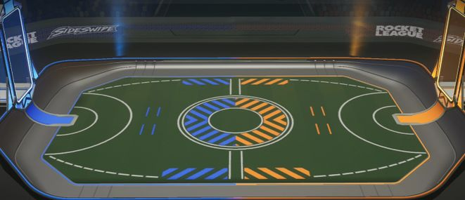
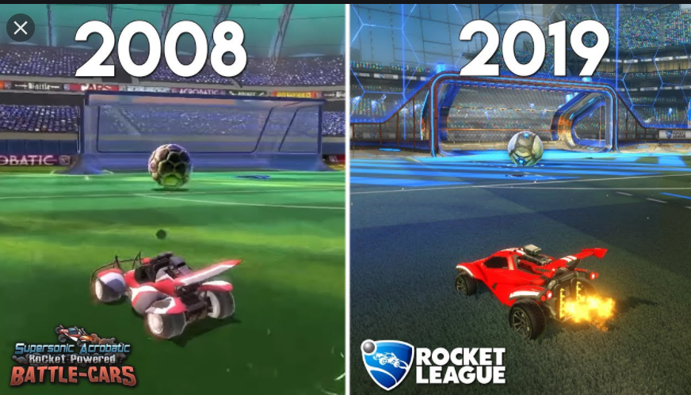

| Inicio | Características del juego | Reglas del juego | Personajes (Coches) | Otros juegos |
|---|
Psyonix (empresa que creó Rocket League) lanzó a finales de 2021 su versión adaptada a los smartphones titulada "Rocket League
Sideswipe".
El juego es muy parecido a su versión original, pero pasa a ser 2D en vez de 3D.

Supersonic Acrobatic Rocket-Powered Battle-Cars, fue la primera versión de Rocket League solo para Play Station 3 desarrollado por
Psyonix y lanzado en octubre de 2008. Es muy parecido al Rocket League actual, pero con algunas diferencias de las texturas y mejoras en los coches.
